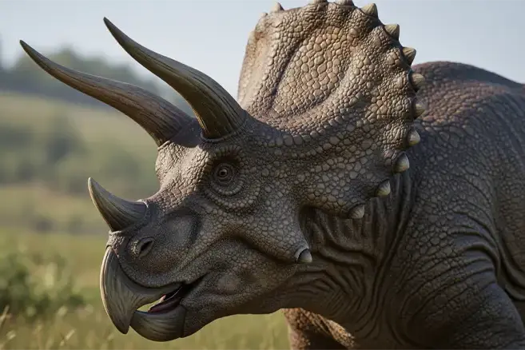
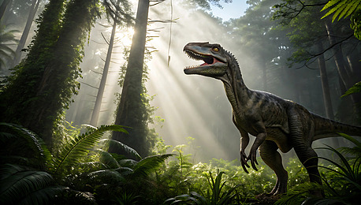
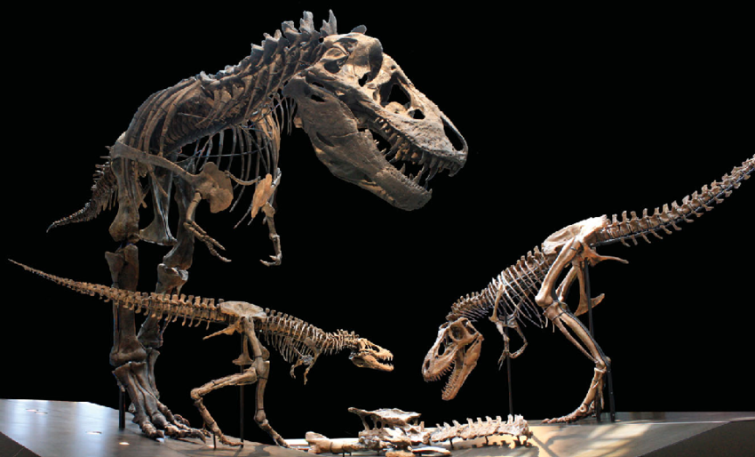
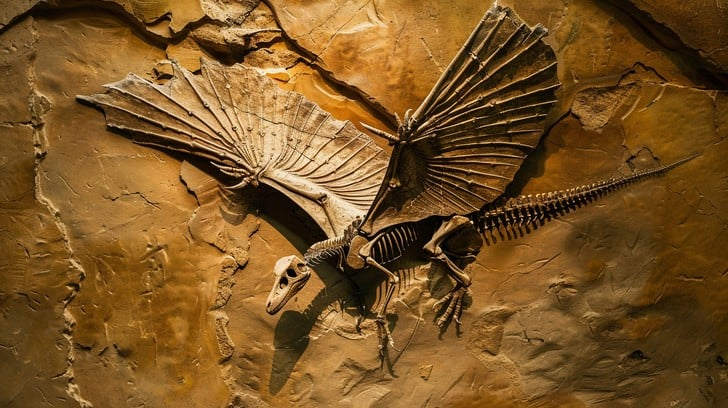

Dino & Fossil Gallery

Allosaurus

Triceratops

Velociraptor

T-Rex Fossil

Stegosaurus Fossil

Pterosaur Fossil
Explore the majestic world of dinosaurs and uncover the mysteries preserved in fossils for millions of years.
Dinosaurs were a diverse group of reptiles that lived during the Mesozoic Era, over 230 million years ago. They ruled the Earth for more than 160 million years, evolving into various forms, sizes, and behaviors.
Allosaurus
Triceratops
Velociraptor
T-Rex Fossil
Stegosaurus Fossil
Pterosaur Fossil
From the first Iguanodon fossil to the discovery of Tyrannosaurus Rex, paleontologists continue to uncover new species and expand our understanding of prehistoric life.
For references, visit libraries, museums, or paleontology websites.